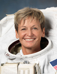

Lyndon B. Johnson Space Center
Houston, Texas 77058
|
National Aeronautics and Space Administration Lyndon B. Johnson Space Center Houston, Texas 77058 |
 |
Biographical Data |
||
Peggy A. Whitson (Ph.D.)
NASA ASTRONAUT
PERSONAL DATA: Born February 9, 1960, in Mt. Ayr, Iowa. Hometown is Beaconsfield, Iowa. Married to Clarence F. Sams, Ph.D. She enjoys weightlifting, biking, basketball and water skiing.
EDUCATION: Graduated from Mt. Ayr Community High School, Mt. Ayr, Iowa, in 1978; received a Bachelor of Science degree in Biology/Chemistry from Iowa Wesleyan College in 1981 and a Doctorate in Biochemistry from Rice University in 1985.
AWARDS/HONORS: Inducted into Iowa Aviation Hall of Fame (2011); BioHouston Women in Science Award (2011); Houston’s 50 Most Influential Women of 2011; Russian Medal of Merit for Space (2011); Texas Women on the Move award recipient (2010); Distinguished Alumni Award, Rice University (2010); NASA Space Flight Medal (2002, 2008); First Lady of Iowa Award presented by the Iowa High School Girls’ Athletic Union (2010); Iowa Transportation Museum, Hero of Valor (2009); Lion’s Club Mount Ayr Elementary Science Lab dedication, Peggy Whitson Science Center (2008); NASA Outstanding Leadership Medal (2006); Distinguished Alumni Award, Iowa Wesleyan College (2002); two patents approved (1997, 1998); Group Achievement Award for Shuttle-Mir Program (1996); American Astronautical Society Randolph Lovelace II Award (1995); NASA Tech Brief Award (1995); NASA Space Act Board Award (1995, 1998); NASA Silver Snoopy Award (1995); NASA Exceptional Service Medal (1995, 2003, 2006, 2008); NASA Space Act Award for Patent Application; NASA Certificate of Commendation (1994); Selected for Space Station Redesign Team (March to June 1993); NASA Sustained Superior Performance Award (1990); Krug International Merit Award (1989); NASA JSC National Research Council Resident Research Associate (1986 to 1988); Summa Cum Laude from Iowa Wesleyan College (1981); President’s Honor Roll (1978 to 1981); Orange van Calhoun Scholarship (1980); State of Iowa Scholar (1979); Academic Excellence Award (1978)
EXPERIENCE: From 1981 to 1985, Whitson conducted her graduate work in Biochemistry at Rice University, Houston, Texas, as a Robert A. Welch Predoctoral Fellow. Following completion of her graduate work, she continued at Rice University as a Robert A. Welch Postdoctoral Fellow until October 1986. Following this position, she began her studies at NASA Johnson Space Center (JSC), Houston, Texas, as a National Research Council Resident Research Associate. From April 1988 until September 1989, Whitson served as the Supervisor for the Biochemistry Research Group at KRUG International, a medical sciences contractor at NASA-JSC. From 1991 to 1997, Whitson was invited to be an Adjunct Assistant Professor in the Department of Internal Medicine and Department of Human Biological Chemistry and Genetics at University of Texas Medical Branch, Galveston, Texas. In 1997, Whitson began a position as Adjunct Assistant Professor at Rice University in the Maybee Laboratory for Biochemical and Genetic Engineering.
NASA EXPERIENCE: From 1989 to 1993, Whitson worked as a Research Biochemist in the Biomedical Operations and Research Branch at NASA-JSC. From 1991 to 1993, she served as Technical Monitor of the Biochemistry Research Laboratories in the Biomedical Operations and Research Branch. From 1991 to 1992, she was the Payload Element Developer for the Bone Cell Research Experiment (E10) aboard SL-J (STS-47) and was a member of the U.S.-USSR Joint Working Group in Space Medicine and Biology. In 1992, she was named the Project Scientist of the Shuttle-Mir Program (STS-60, STS-63, STS-71, Mir 18, Mir 19) and served in this capacity until the conclusion of the Phase 1A Program in 1995. From 1993 to 1996, Whitson held the additional responsibilities of the Deputy Division Chief of the Medical Sciences Division at NASA-JSC. From 1995 to 1996, she served as Co-Chair of the U.S.-Russian Mission Science Working Group. In April 1996, she was selected as an Astronaut Candidate and started training in August 1996. Upon completing two years of training and evaluation, she was assigned technical duties in the Astronaut Office Operations Planning Branch and served as the lead for the Crew Test Support Team in Russia from 1998 to 1999. From November 2003 to March 2005, she served as Deputy Chief of the Astronaut Office. Also in 2003, she served as commander of the fifth NASA Extreme Environment Mission Operations (NEEMO) mission.
From March 2005 to November 2005, she served as Chief of the Station Operations Branch, Astronaut Office. Whitson trained as the backup ISS commander for Expedition 14 from November 2005 to September 2006. Whitson also was a member of the 2004 Astronaut Selection Board and chaired the Astronaut Selection Board in 2009.
Whitson completed two six-month tours of duty aboard the International Space Station, the second as the station commander for Expedition 16 in April 2008. This was Whitson’s second long-duration spaceflight. She has accumulated 377 days in space between the two missions, the most for any woman. Whitson has also performed a total of six career spacewalks, adding up to 39 hours and 46 minutes.
From October 2009 to July 2012, Whitson served as Chief of the Astronaut Corps and was responsible for the mission preparation activities and on-orbit support of all International Space Station crews and their support personnel. She was also responsible for organizing the crew interface support for future heavy launch and commercially-provided transport vehicles.
SPACEFLIGHT EXPERIENCE: The Expedition 5 crew launched on June 5, 2002, aboard STS-111 and docked with the International Space Station on June 7, 2002. During her six-month stay aboard the space station, Dr. Whitson installed the Mobile Base System, the S1 truss segment and the P1 truss segment, using the Space Station Remote Manipulator System; performed a four-hour and 25-minute Orlan spacewalk to install micrometeoroid shielding on the Zvezda Service Module and activated and checked out the Microgravity Sciences Glovebox, a facility class payload rack. She was named the first NASA Science Officer during her stay, and she conducted 21 investigations in human life sciences and microgravity sciences as well as commercial payloads. The Expedition 5 crew (one American astronaut and two Russian cosmonauts) returned to Earth aboard STS-113 on December 7, 2002. Completing her first flight, Dr. Whitson logged 184 days, 22 hours and 14 minutes in space.
The Expedition 16 crew of Whitson and Cosmonaut Yuri Malenchenko launched on October 10, 2007, aboard a Soyuz TMA-11 spacecraft and docked with the International Space Station on October 12, 2007. The third crew member position for this expedition was filled by astronauts rotating in and out via shuttle flights and included Clay Anderson, Dan Tani, Leo Eyharts and Garrett Reisman. During Expedition 16, as commander, Whitson oversaw the first expansion of the station’s living and working space in more than six years. The station and visiting space shuttle crews added the Harmony connecting node, the European Space Agency’s Columbus laboratory, the Japan Aerospace Exploration Agency’s Kibo logistics pressurized module and the Canadian Space Agency’s Dextre robot. Whitson performed five spacewalks to conduct assembly and maintenance tasks outside the complex. Whitson and Malenchenko undocked from the station and returned to Earth on April 19, 2008, aboard the Soyuz TMA-11 spacecraft. Whitson logged 192 days in space.
OCTOBER 2012